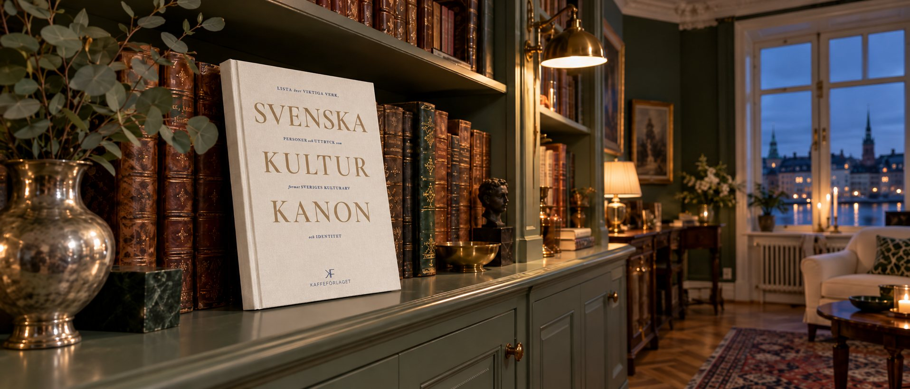
100 verk som skapade Sverige
Sveriges första kulturkanon samlad i en bok – ett verk per uppslag, med texten om verket, människorna bakom och tiden det kom ur.
Utredningen SOU 2025:92 valde ut hundra verk och företeelser i elva avsnitt: litteratur, poesi, musik, bild och form, film och scenkonst – men också lagar, uppfinningar, ekonomi, religion och offentliga rum. Från Heliga Birgittas uppenbarelser och Falu koppargruva till Det sjunde inseglet, Pippi Långstrump och pappaledigheten. En bok att bläddra i, läsa högt ur och ge bort.
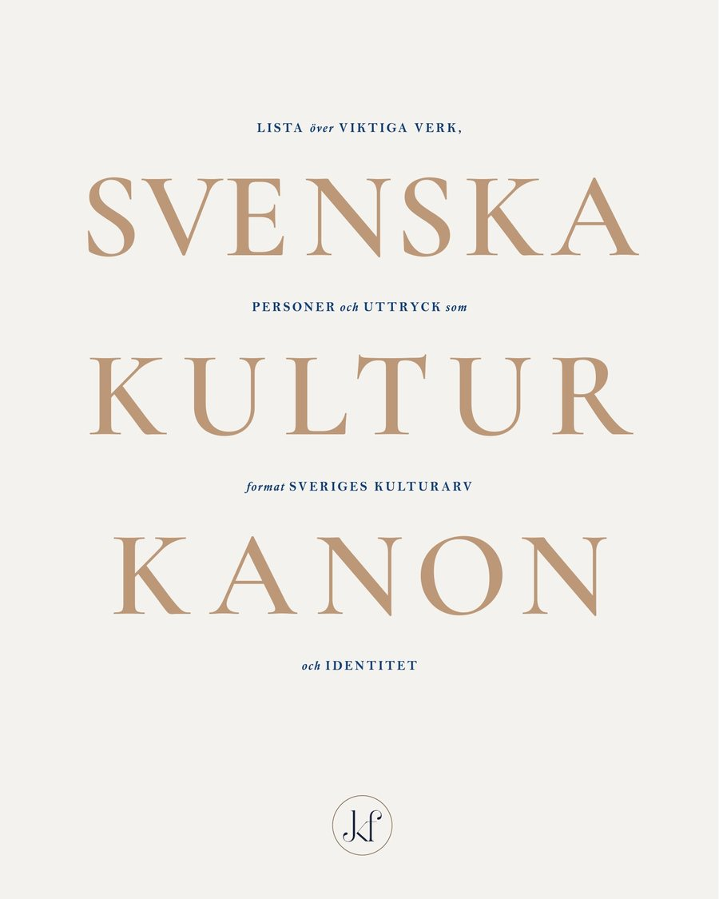
Ett verk
per uppslag
Från Magnus Erikssons landslag till Pippi Långstrump, från Falu koppargruva till Radiohuset. Hela den svenska kulturkanonen i en bok att bläddra i, läsa högt ur och ge bort.
Varje uppslag presenterar ett verk eller en företeelse, människorna bakom och sammanhanget det kom ur. Texterna är korta och kan läsas utan förkunskaper. QR-koderna leder vidare till musiken, filmerna och dikterna i sin helhet.
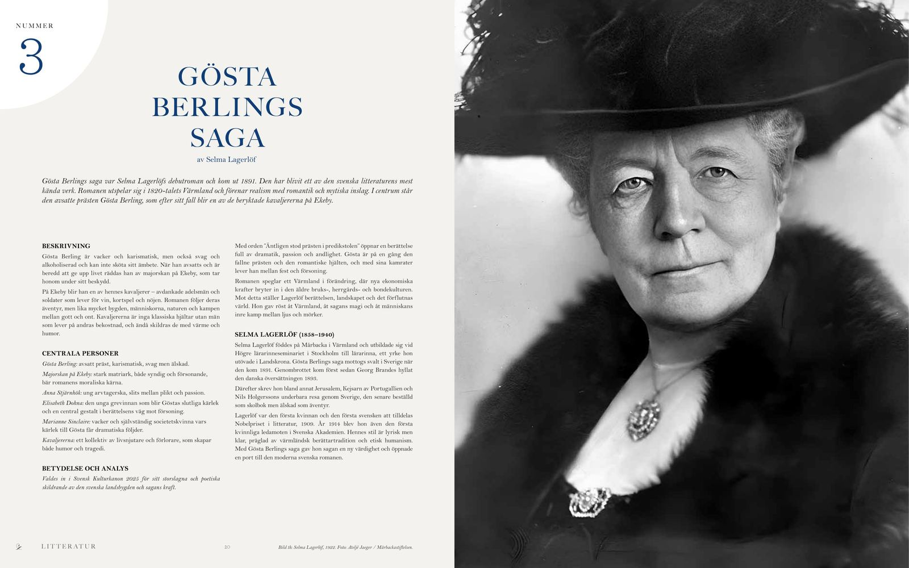
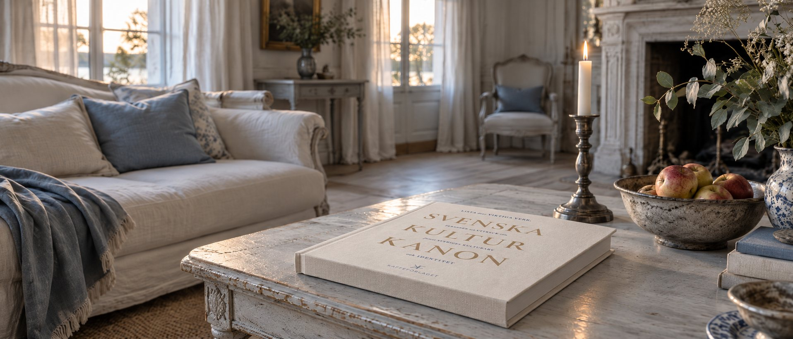
En kulturkanon för Sverige
Frågan om en svensk kulturkanon har länge rört sig i gränslandet mellan kulturpolitik, bildning och identitet.
Under årtionden har frågan återkommit i debatten om vad som förenar ett land som förändras demografiskt, socialt och kulturellt – och om vilka berättelser, verk, idéer och institutioner som utgör gemensamma referenspunkter.
När regeringen 2023 tillsatte kommittén En kulturkanon för Sverige var uppdraget att ta fram en svensk kulturkanon som skulle göra det svenska kulturarvet tillgängligt för fler och kunna fungera som ett levande och användbart verktyg för bildning, gemenskap och inkludering.
Arbetet leddes av historikern Lars Trägårdh, vars forskning om svensk individualism, tillit och samhällskontrakt har bidragit till förståelsen av det moderna Sverige. Ett återkommande tema i hans forskning är sambandet mellan starka gemensamma institutioner och långtgående individuell självständighet – ett samhällsmönster där personlig frihet inte nödvändigtvis står i motsats till det gemensamma, utan delvis möjliggörs av det.
I det perspektivet kan en kulturkanon ses mindre som ett monument över det förflutna och mer som ett redskap för orientering och bildning: ett sätt att synliggöra verk, idéer och företeelser som har format Sverige och blivit en del av våra gemensamma referensramar.
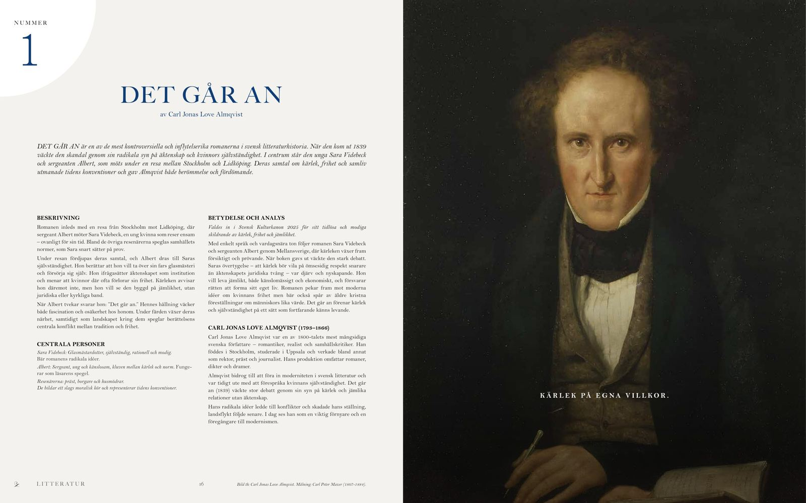
SOU 2025:92 utgår från en bred förståelse av kultur. Kanonen begränsas inte till konstnärliga verk, utan omfattar också samhälleliga företeelser inom bland annat religion, lag och rätt, ekonomi, uppfinningar och offentlighet. Självständiga expertgrupper fick ansvaret för urvalet och valde sammanlagt ut 100 verk och företeelser som bedömdes ha satt varaktiga avtryck i svensk kultur och samhällsutveckling.
Utredningen betonar att kulturkanonen ska vara tillgänglig och användbar. Digital tillgänglighet, folkbildning och långsiktig förvaltning är därför viktiga delar av förslaget. Kanonen föreslås också utvärderas efter tio år och vid behov revideras.
En kanon behöver inte vara den slutgiltiga berättelsen om Sverige. Den kan i stället vara en gemensam utgångspunkt – en inbjudan att upptäcka, diskutera och ibland ifrågasätta det som har format landet. Frågor om urval, representation, makt och vad som över huvud taget ska räknas som kultur är ofrånkomliga. En kanon behöver inte avsluta den diskussionen, men den kan ge den en struktur att tänka och samtala utifrån – snarare än ett facit att underkasta sig.
- December 2023Regeringen beslutar om kommittédirektivet En svensk kulturkanon (Dir. 2023:180). Arbetet leds av Lars Trägårdh.
- 2 september 2025Utredningen överlämnar betänkandet En kulturkanon för Sverige (SOU 2025:92) med 100 verk i elva kategorier.
- Hösten 2025Betänkandet skickas på remiss till myndigheter, kulturinstitutioner och organisationer. Remisstiden löper ut 7 januari 2026.
- 2026–2027Skolverket och Riksantikvarieämbetet arbetar med uppdrag om hur kanonen ska användas och tillgängliggöras, med redovisning senast 31 maj 2027.
- December 2026Svenska Kulturkanon – 100 verk som skapade Sverige ges ut av Kaffeförlaget.
Källa: SOU 2025:92 och regeringens kommittédirektiv. Läs hela betänkandet på regeringen.se.
"Jag tycker detta ser väldigt fint ut. Inga invändningar från min sida vad gäller er inledning och er tolkning av vad jag och utredningen landade i."Lars Trägårdh
Historiker, ordförande för kulturkanonutredningen
Boken är skapad för att göra den svenska kulturkanonen levande, tillgänglig och lätt att ta till sig. Den presenterar de verk och företeelser som valts ut till kanonen och – där det är relevant – människorna bakom dem.
Vår roll har varit kuratorns. Vi har inte gjort urvalet eller skapat en egen kulturkanon. Vi har utgått från expertgruppernas arbete och gett det en sammanhållen, tillgänglig och visuellt engagerande form. Vårt arbete har handlat om att välja perspektiv, sätta innehållet i sammanhang och göra det begripligt för en bred publik.
Varje uppslag ger en kort introduktion till verket eller företeelsen, dess betydelse och dess historiska och kulturella sammanhang. Texterna är avsiktligt koncentrerade och skrivna för att kunna läsas utan särskilda förkunskaper.
Det här är därför inte en bok som måste läsas från början till slut. Den är gjord för att bläddras i, upptäckas och återvändas till – i hemmet, i klassrummet, på biblioteket eller av den som helt enkelt blir nyfiken på en bild, en person eller ett verk.
Framför allt vill vi skapa en bok som öppnar för samtal. Vid middagsbordet, i klassrummet eller i vardagen kan kulturkanonen bli en gemensam utgångspunkt för att tala om kultur, historia och identitet – och om varför vi minns vissa saker, hur de har påverkat oss och hur vår bild av Sverige förändras över tid.
Utredningen räknar diktantologin som ett verk, nummer 10, med tio dikter av lika många poeter. Boken presenterar därför 109 enskilda verk, vart och ett på ett eget uppslag.
Gustaf Ekelund
Text och redaktion. Bakgrund i kommunikation för stora bolag och startups, med vana att göra komplex information begriplig.
Agneta Norlin
Formgivning och layout. Lång erfarenhet av digitalt och print, från stora koncerner till startups.
272 sidor · 240 × 300 mm
Inbunden, tryckta försättsblad
ISBN 978-91-992191-0-3
Kaffeförlaget AB, 2026
De korta formuleringar som förekommer på eller i anslutning till bilder är, om inte annat anges, redaktionella texter skrivna särskilt för boken. De är inte citat ur verken eller uttalanden av de personer som skildras. Direkta citat markeras och källanges särskilt.
Källor: SOU 2025:92 samt offentliga intervjuer och samtal med Lars Trägårdh.
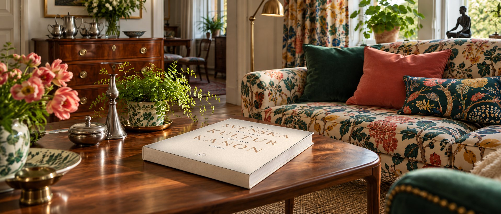
Elva avsnitt, hundra verk
Bokens ordning följer utredningens kategorier, från prosa och poesi till lagar, uppfinningar och offentliga rum.
Kanon har 100 verk. Nummer 10 är en diktantologi med tio dikter, så boken presenterar 109 enskilda verk.
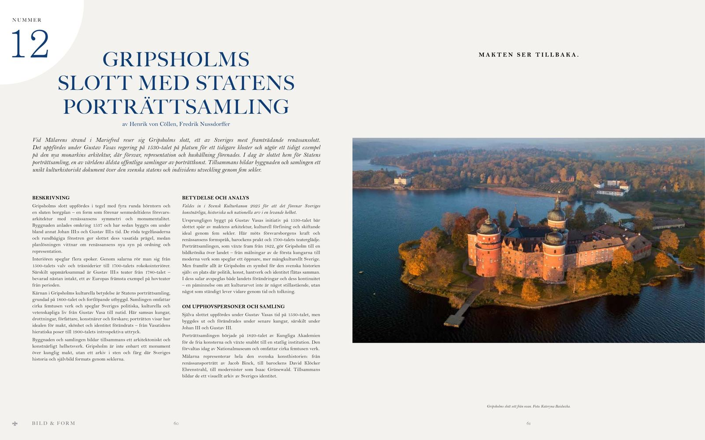
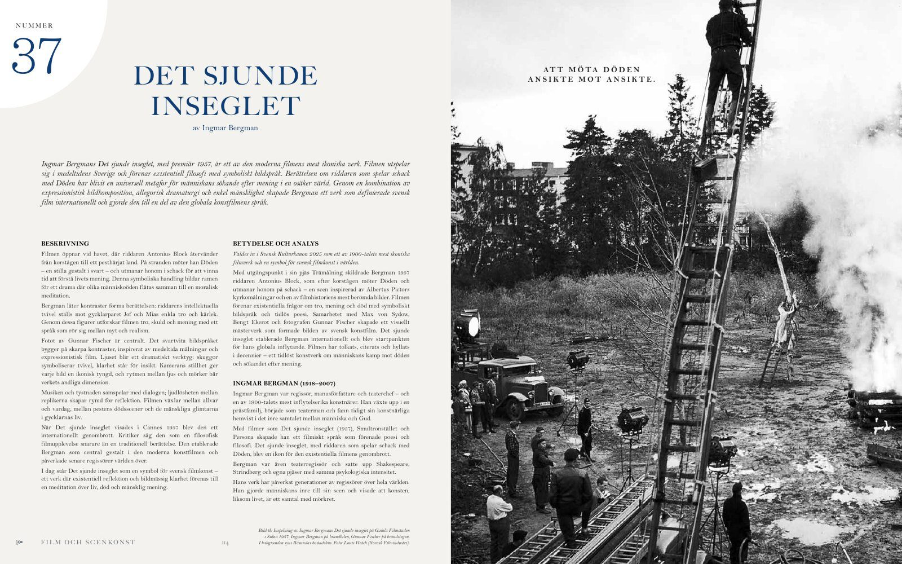
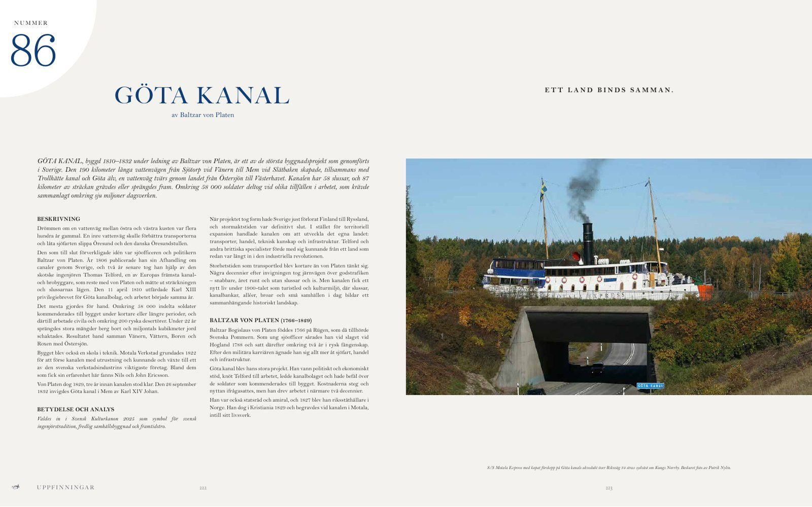
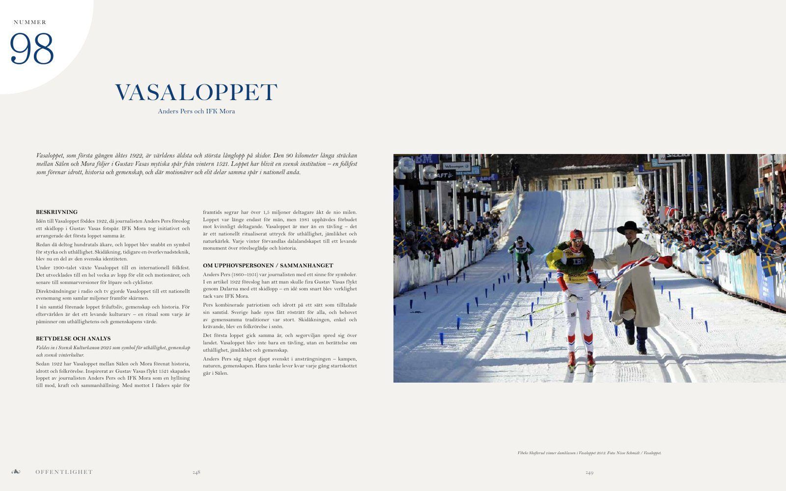
Musik
Från barockens hovmusik till folkmusik, jazz och modern konstmusik.
Musiken har alltid varit Sveriges gemensamma språk. Från vallvisor och psalmer till Bellmans lyrik, den klassiska romantiken, jazzens rytmer och popens världserövring bär musiken spåren av både melankoli och glädje. Den har förenat det andliga med det folkliga, kyrkan med dansbanan, stillheten med festens ljud.
Sverige har gång på gång låtit musik bli uttryck för både individens känsla och nationens stämning. Kompositörer som Stenhammar och Peterson-Berger sökte ett tonfall som var eget men universellt; artister som ABBA, Roxette och Robyn gav den svenska melodikänslan global form.
Musiken har tröstat, samlat och inspirerat – från psalmsång i kris till körsång i vardag. För sin samtid har den varit gemenskap, för eftervärlden ett minne av hur vi lät när vi trodde på framtiden. Svensk musik är i grunden en livshållning: melodisk, melankolisk och öppen mot världen.
- NUMMER21Du skannade det här verket
Drottningholmsmusiken
J.H. RomanEn festlig svit av 24 orkestersatser som blev 1700-talets svenska nationalmusik och en symbol för hovkulturens konstnärliga förfining.
Sidan 80 i boken - NUMMER22Du skannade det här verket
Sjung med oss, mamma
Alice TegnérEn barnvisesamling som förvandlade lek och vardag till sång, och lade grunden för svensk barnmusiktradition i generationer.
Sidan 82 i boken - NUMMER23Du skannade det här verket
Midsommarvaka, op. 19
Hugo AlfvénEn orkestral hyllning till svensk sommar och folkton, där virtuositet och nationalromantik förenas i ett av våra mest älskade musikverk.
Sidan 84 i boken - NUMMER24Du skannade det här verket
Tre inspelade låtar
Hjort Anders OlssonTidiga inspelningar som bevarar och förmedlar den svenska spelmansmusiken – en levande bro mellan folktradition och nutid.
Sidan 86 i boken - NUMMER25Du skannade det här verket
Flyttningssång / Till kåtan och hemmet
L. Sikku, F. JohanssonUnika dokumentationer av samisk jojk och sång, där rösten bär landskapets rytm och folkets muntliga kultur vidare.
Sidan 88 i boken - NUMMER26Du skannade det här verket
Calle Schewens vals / Möte i monsunen
Evert TaubeVisor som förenar poesi, melodi och berättarglädje – en musikalisk diktning där Sverige möter världen i segel, hav och hjärta.
Sidan 90 i boken - NUMMER27Du skannade det här verket
Förklädd gud, op. 24
Lars-Erik LarssonEn lyrisk svit för kör och orkester som under krigets mörker blev en musikalisk bekännelse till medmänsklighet och fred.
Sidan 92 i boken - NUMMER28Du skannade det här verket
Aniara
Karl-Birger BlomdahlEn banbrytande science fiction-opera där modernism, rymd och moralisk reflektion förenas till ett unikt nordiskt framtidsdrama.
Sidan 94 i boken - NUMMER29Du skannade det här verket
Jazz på svenska
Jan JohanssonEn milstolpe i svensk musik – där jazz och folkmusik smälter samman till stillsam poesi, karg skönhet och rytmisk eftertanke.
Sidan 96 i boken - NUMMER30Du skannade det här verket
Symfoni nr 7
Allan PetterssonEtt monumentalt och personligt verk där lidande, vrede och hopp vävs till symfonisk livskamp – ett rop ur modernitetens själ.
Sidan 98 i boken
Här finns inget verk
Adressen kan vara felstavad eller sidan flyttad. Börja om från startsidan eller bläddra bland verken.
Varje vecka på Instagram: veckans verk på måndagen, kanonquiz på onsdagen och lördagen och personen bakom verket på fredagen.
Hur väl känner du kanon?
Frågor om bokens 109 verk – med nummerfrågor, tidslinjer och poäng för snabba svar. Efter varje fråga får du veta var verket finns i boken.
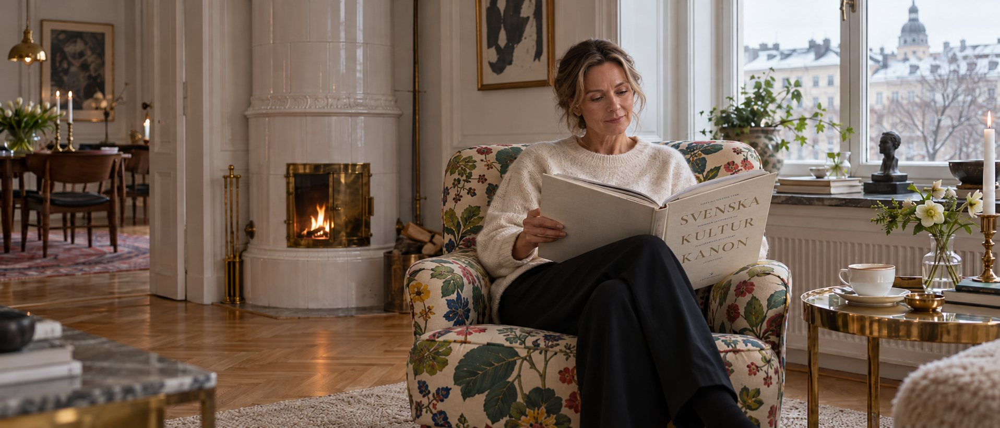
Beställ boken
Första upplagan levereras i december 2026. Sista beställningsdag för leverans före jul meddelas här.
Svenska Kulturkanon
Inbunden, 272 sidor, 240 × 300 mm. Med tryckta försättsblad i marmormönster.
695 kr inkl. momsPresentförpackning
Boken inslagen i silkespapper, med ett tryckt gåvokort och din hälsning.
745 kr inkl. momsFöretagsgåva
Rabatt för företag, skolor och föreningar. Tryckt hälsning och leverans till en adress.
Begär offertPriserna är förslag och fastställs före lansering.
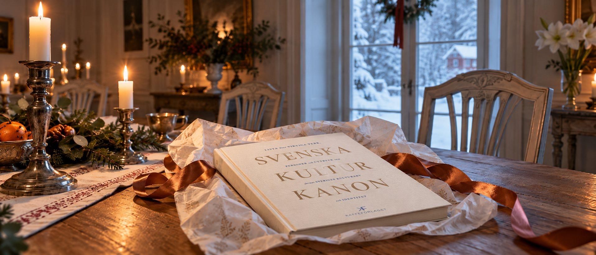
En svensk gåva
En representativ gåvobok för kunder, medarbetare, styrelser, ambassader och internationella gäster – och ett referensverk för skolor, bibliotek och föreningar.
Mängdpris
Rabatt från 25 exemplar, stigande med volym.
Egen hälsning
Tryckt kort eller exlibris med er logotyp.
Leverans
Till en adress eller direkt till mottagarna.
Passar för julgåvor, jubileer, styrelsemöten och besök från utlandet. Banker, advokatbyråer, stiftelser, kommuner och kulturinstitutioner är välkomna att höra av sig.
För återförsäljare och redaktioner
Återförsäljare
Boken passar design- och inredningsbutiker, museibutiker och bokhandlar. Vi skickar gärna ett exemplar och säljmaterial med villkor.
- Titel
- Svenska Kulturkanon – 100 verk som skapade Sverige
- ISBN
- 978-91-992191-0-3
- Format
- 240 × 300 mm, inbunden, 272 sidor
- Cirkapris
- 695 kr
- Utgivning
- December 2026
- Förlag
- Kaffeförlaget AB
Press
Pressbilder, omslag i hög upplösning och recensionsexemplar finns för redaktioner. Gustaf och Agneta medverkar gärna i intervjuer.
- Pressmeddelande (kommer)
- Omslag och uppslag för publicering
- Porträtt av kuratorerna
- Säljblad för handeln (PDF, 6 sidor)
Hör av dig
Frågor om boken, beställningar, press och samarbeten:
info@svenskakulturkanon.se
Kaffeförlaget AB
Saltsjövägen 37 B, 181 62 Lidingö
Org.nr 559584-4852
Hittat ett fel?
Läs om hur vi hanterar rättelser.
Rättelser och tillägg
Boken har sammanställts med stor omsorg. Trots noggrann research och korrekturläsning kan sakfel eller tryckfel förekomma.
Hittar du ett sakfel, ett tryckfel eller en rättighetsfråga vill vi gärna veta. Skriv till info@svenskakulturkanon.se och ange sidnummer och vad det gäller.
Bekräftade rättelser publiceras här och förs in i nästa upplaga.
Inga rättelser publicerade ännu.
Köpvillkor
Utkast. Texten fylls i och granskas innan webbshopen öppnar.
Säljare
Kaffeförlaget AB, org.nr 559584-4852, Saltsjövägen 37 B, 181 62 Lidingö. E-post: info@svenskakulturkanon.se
Priser och betalning
[Priser inklusive 6 % moms. Betalsätt.]
Leverans
[Leveranstid, fraktkostnad och leveranssätt.]
Ångerrätt
[Enligt lagen om distansavtal har du 14 dagars ångerrätt från att du tagit emot varan. Hur du ångrar ett köp och vem som står för returfrakten.]
Reklamation
[Hur du reklamerar en skadad eller felaktig vara.]
Tvister
[Allmänna reklamationsnämnden, ARN.]
Så hanterar vi dina uppgifter
Utkast. Texten fylls i och granskas innan sajten tar emot beställningar och anmälningar.
Personuppgiftsansvarig
Kaffeförlaget AB, org.nr 559584-4852. Kontakt: info@svenskakulturkanon.se
Vilka uppgifter vi samlar in
[Beställningar: namn, adress, e-post, telefon. Nyhetsbrev: e-post. Offertförfrågningar: kontaktuppgifter.]
Varför och hur länge
[Ändamål och rättslig grund för varje typ av uppgift, och hur länge de sparas.]
Vilka vi delar uppgifter med
[Betaltjänst, lager och fraktbolag, nyhetsbrevstjänst.]
Dina rättigheter
[Rätt till tillgång, rättelse, radering och att klaga hos Integritetsskyddsmyndigheten, IMY.]
Cookies
[Vilka cookies sajten använder.]